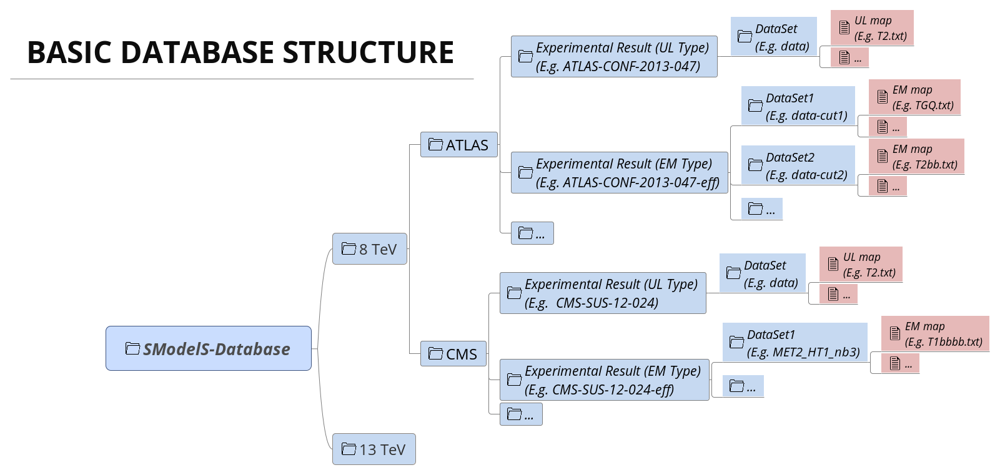

Database Definitions¶
The so-called experiment module contains the basic tools necessary for handling the database of experimental results. The SModelS database collects experimental results from both ATLAS and CMS, which are used to compute the experimental constraints on specific models. Starting with version 1.1, the SModelS database includes two types of experimental constraints:
- Upper Limit (UL) constraints: constrains on \(\sigma \times BR\) of simplified models, provided by the experimental collaborations (see UL-type results);
- Efficiency Map (EM) constraints: constrains the total signal (\(\sum \sigma \times BR \times \epsilon\)) in a specific signal region. The efficiencies in this case are either provided by the experimental collaborations or computed by theory groups (see EM-type results);
Although the two types of constraints above are very distinct, both the folder structure and the object structure of SModelS are sufficiently flexible to simutaneously handle both UL-type and EM-type results. Therefore, for both UL-type and EM-type constraints, the database obeys the following structure:
- Database: collects a list of Experimental Results.
Experimental Result: each Experimental Result corresponds to an experimental conference note or publication and contains a list of Data Sets as well as general information about the result (luminosity, publication reference,...).
Data Set: a single Data Set corresponds to one signal region of the experimental note or publication [*]. In case of UL-type results there is a single Data Set, usually corresponding to the best signal region (for more details see Data Set). For EM-type results, there is one Data Set for each signal region. Each Data Set contains the Upper Limit maps for Upper Limit results or the Efficiency maps for Efficiency Map results.
- Upper Limit map: contains the upper limit constraints for UL-type results. Each map refers to a single simplified model (or more precisely to a single element or sum of elements).
- Efficiency map: contains the efficiencies for EM-type results. Each map refers to a single simplified model (or more precisely to a single element or sum of elements).
A summary of the above structure can be seen below:
{kind=link}
In the following sections we describe in detail the main concepts and elements which constitute the SModelS database. More details about the database folder structure and object struture can be found in Database of Experimental Results.
Database¶
Each publication or conference note can be included in the database as an Experimental Result. Hence, the database is simply a collection of experimental results.
- The Database is described by the Database Class
Experimental Result¶
An experimental result contains all the relevant information corresponding to an experimental publication or conference note. In particular it holds general information about the experimental analysis, such as the corresponding luminosity, center of mass energy, publication reference, etc. The current version allows for two possible types of experimental results: one containing upper limit maps (UL-type) and one containing efficiency maps (EM-type).
- Experimental Results are described by the ExpResult Class
Experimental Result: Upper Limit Type¶
Upper Limit (UL) experimental results contains the experimental constraints on the cross-section times branching ratio ( \(\sigma \times BR\) ) from a specific experimental publication or conference note. These constraints are typically given in the format of Upper Limit maps, which correspond to 95% upper limit values on \(\sigma \times BR\) as a function of the respective parameter space (usually BSM masses or slices over mass planes). The UL values usually assume the best signal region (for a given point in parameter space) or a combination of signal regions (at least for simple cut and count analyses). Hence, for UL results there is a single Data Set, containing one or more UL maps. An example of a UL map is shown below:

Within SModelS the above UL map is used to constrain the element \([[[jet]],[[jet]]]\), where we are using the notation defined in Bracket Notation. Usually a single conference note/publication contains several UL maps, hence each UL-type experimental result contains several UL maps, each one constraining different elements or sum of elements. We also point out that the exclusion curve shown in the UL map above is never used by SModelS.
Upper Limit Constraint¶
The upper limit constraint specifies which element or sum of elements is being constrained by the respective UL map. For simple constraints as the one shown in the UL map above, there is a single element being constrained (\([[[jet]],[[jet]]]\)). In some cases, however, the constraint corresponds to a sum of elements. As an example, consider the ATLAS analysis shown below:

As we can see, the upper limits apply to the sum of the cross-sections:
In this case the UL constraint is simply:
where it is understood that the sum is over the weights of the respective elements and not over the elements themselves.
Note that the sum can be over particle charges, flavors or more complex combinations of elements. However, almost all analyses sum only over elements sharing a common global topology.
Finally, in some cases the UL constraint assumes specific constributions from each element. For instance, in the example above it is implicitly assumed that both the electron and muon elements contribute equally to the total cross-section. Hence these conditions must also be specified along with the constraint, as described in UL conditions.
Upper Limit Conditions¶
When the analysis constraints are non-trivial (refer to a sum of elements), it is often the case that there are implicit (or explicit) assumptions about the contribution of each element. For instance, in the figure above, it is implicitly assumed that each lepton flavor contributes equally to the summed cross-section:
Therefore, when applying these constraints to general models, one must also verify if these conditions are satisfied. Once again we can express these conditions in bracket notation:
where it is understood that the condition refers to the weights of the respective elements and not to the elements themselves.
In several cases it is desirable to relax the analysis conditions, so the analysis upper limits can be applied to a broader spectrum of models. Once again, for the example mentioned above, it might be reasonable to impose instead:
The departure from the exact condition can then be properly quantified and one can decide whether the analysis upper limits are applicable or not to the model being considered. Concretely, for each condition a number between 0 and 1 is returned, where 0 means the condition is exactly satisfied and 1 means it is maximally violated. Allowing for a \(20\%\) violation of a condition corresponds approximately to a ‘’condition violation value’’ (or simply condition value) of 0.2. The condition values are given as an output of SModelS, so the user can decide what are the maximum acceptable values.
Experimental Result: Efficiency Map Type¶
Unlike UL-type results, the main information held by Efficiency Map (EM) results are the efficiencies for simplified models. These may be provided by the experimental collaborations or independently computed by theory groups. Efficiency maps correspond to a grid of simulated acceptance times efficiency ( \(A \times \epsilon\) ) values for a specific signal region. In the following we will refer to \(A \times \epsilon\) simply as efficiency. Furthermore, additional information, such as the luminosity, number of observed and expected events, etc is also stored in a EM-type result.
Another important difference between UL-type results and EM-type results is the existence of several signal regions, which in SModelS are mapped to Data Sets. While UL-type results contain a single Data Set (‘’signal region’‘), EM results hold several Data Sets, one for each signal region (see the database scheme above). Each Data Set contains one or more efficiency maps, one for each element or sum of elements. The efficiency map is usually a function of the BSM masses appearing in the element, as shown by the example below:

Within SModelS the above EM map is used to compute the efficiency for the element \([[[jet]],[[jet]]]\), where we are using the notation defined in Bracket Notation. Usually there are several EM maps for a single data set: one for each element or sum of elements. In order to use a language similar to the one used in UL-type results, the element (or elements) for which the efficiencies correspond to are still called constraint.
Although efficiencis are most useful for EM-type results, their concept can also be extended to UL-type results. For the latter, the efficiencies for a given element are either 1, if the element appears in the UL constraint, or 0, otherwise. Atlhough trivial, this extension allows us to treat EM-type results and UL-type results in a very similar fashion (see Theory Predictions for more details).
Data Sets¶
Data sets are a way to conveniently group efficiency maps corresponding to the same signal region. As discussed in UL-type results, data sets are not necessary for UL-type results, since in this case there is a single ‘’signal region’‘. Nonetheless, data sets are also present in UL-type results in order to allow for a similar structure for both EM-type and UL-type results (see database scheme).
For UL-type results the data set contains the UL maps as well as some basic information, such as the type of Experimental Result (UL). On the other hand, for EM-type results, each data set contains the EM maps for the corresponding signal region as well as some additional information: the observed and expected number of events in the signal region, the signal upper limit, etc. In the folder structure shown in database scheme, the upper limit maps and efficiency maps for each element (or sum of elements) are stored in files labeled accoring to the TxName convention.
- Data Sets are described by the DataSet Class
TxName Convention¶
Since using the bracket notation to describe the simplified models appearing in the upper limit or efficiency maps can be rather lenghty, it is useful to define a shorthand notation for the constraints. SModelS adopts a notation based on the CMS SMS conventions, where each specific constraint is labeled as T<constraint name>, which we refer as TxName. For instance, the TxName corresponding to the constraint in the example above is TSlepSlep. A complete list of TxNames can be found here.
- Upper limit and efficiency maps are described by the TxName Class
More details about the database folder structure and object struture can be found in Database of Experimental Results.
| [*] | The name Data Set is used instead of signal region because it is concept is slightly more general than the latter. For instance, in the case of UL-type results, a Data Set may not correspond to a single signal region, but to a combination of signal regions. |